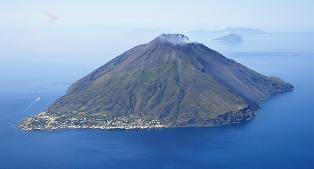

L'isola di Stromboli
Stromboli è una vita vissuta in simbiosi con un vulcano attivo. Crescere qui significa accettare il ritmo imprevedibile della terra e dell'isolamento marittimo.
In questa pagina troverai:

Istruzione
A Stromboli la scuola è un presidio di resistenza demografica. Con pochi alunni riuniti in pluriclassi e docenti spesso pendolari, l'istruzione primaria è una sfida logistica. A 14 anni, però, il percorso si interrompe: i ragazzi devono trasferirsi a Lipari o in Sicilia per proseguire gli studi superiori.
Approvigionamento e cibo
A Stromboli la spesa è subordinata alle mareggiate. Senza produzione agricola su larga scala, l'isola dipende totalmente dai traghetti merci. Quando il mare forza 5 cancella i porti, i minimarket esauriscono subito i beni freschi (pane, latte, carne), costringendo i residenti a vivere di scorte, conserve e congelatore.
Servizi essenziali
A Stromboli i servizi essenziali poggiano su un equilibrio fragilissimo. La guardia medica locale gestisce le prime emergenze, ma per traumi complessi o specialisti l'unica salvezza è l'elisoccorso del 118. Tra blocco dei rifiuti via mare, burocrazia e isolamento winter, la coesione sociale di vicinato sostituisce spesso le carenze dello Stato.
Fonti
Le analisi sulla vita residenziale eoliana si basano sui dati demografici ISTAT, sui report dell'Ufficio Scolastico Regionale per la Sicilia relativi alle pluriclassi, sulle tabelle di continuità territoriale della Regione Siciliana e sui bollettini di navigazione di Liberty Lines. Una mappatura istituzionale per documentare l'isolamento oltre la narrazione turistica.